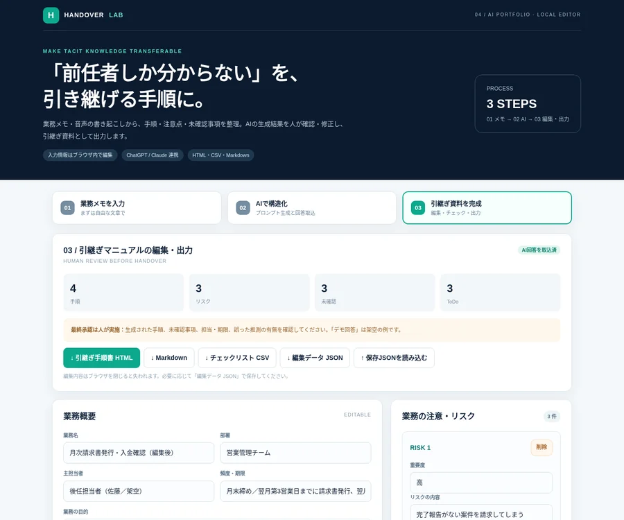

何を試したかったか
担当者が持つ曖昧な業務知識を、後任者が確認しやすい形に整理できないかという着想から制作しました。
内容・構成
メモからAIへの指示を作成し、ChatGPT・Claudeなど外部AIが生成した構造化データをアプリに取り込みます。結果の編集、チェックリスト化、HTML・CSVなどの出力を試せます。
今回のサンプルの範囲
AIによる文章生成はアプリ内で自動実行されず、外部AIとのコピー＆ペースト連携です。架空サンプルでのデモであり、社内環境への導入や実業務での運用実績ではありません。